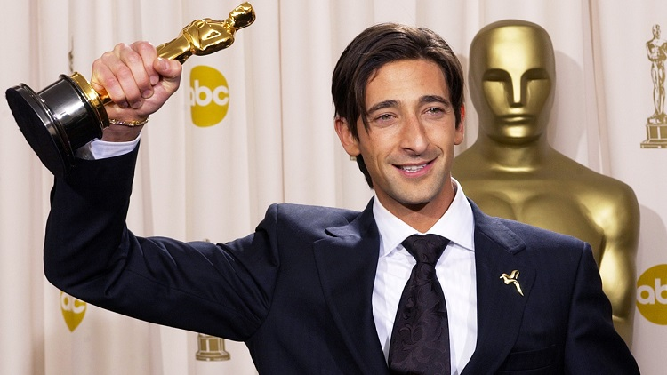
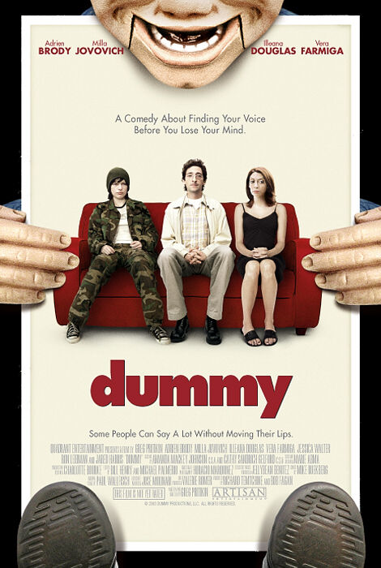
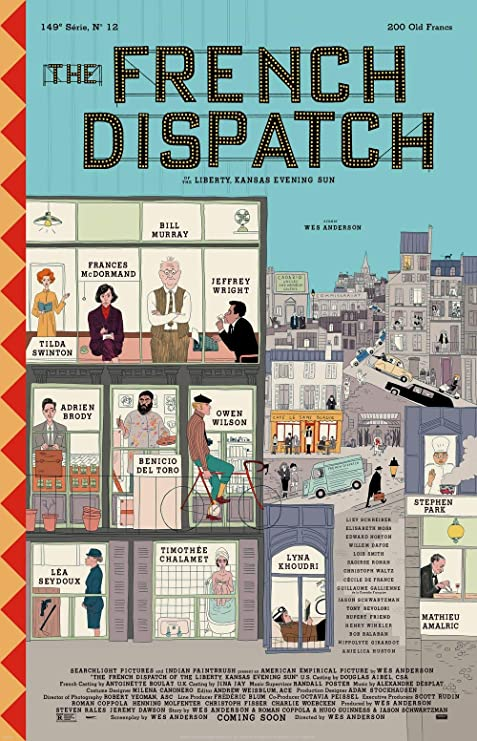

Adrien Brody

Adrien Brody won the Academy Award for Best Actor at age 29 for his role Wladyslaw Szpilman in The Pianist (2002).
Several Movies
- 
Dummy
2002 The Pianist
2002
The Darjeeling Limited
2007Detachment
2011The Grand Budapest Hotel
2014- 
The Franch Dispatch
2021
Click here for more details about Adrien Brody